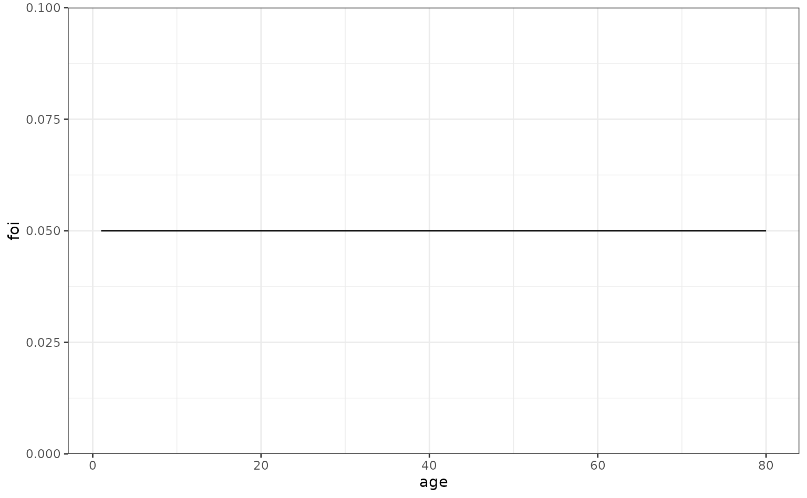
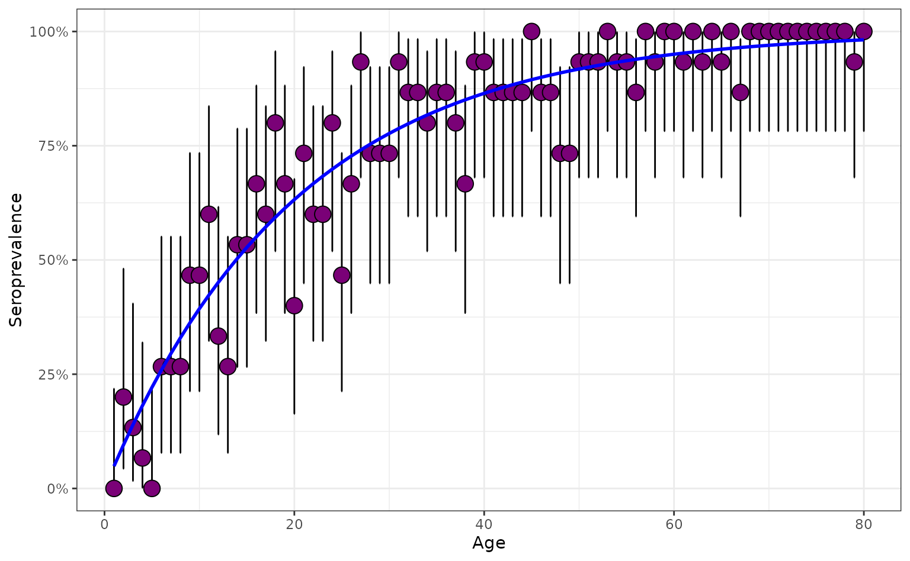
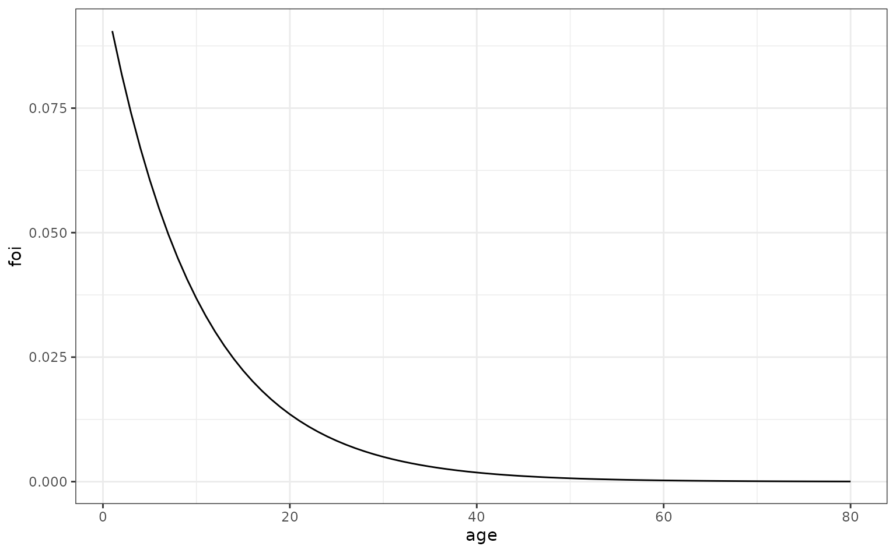
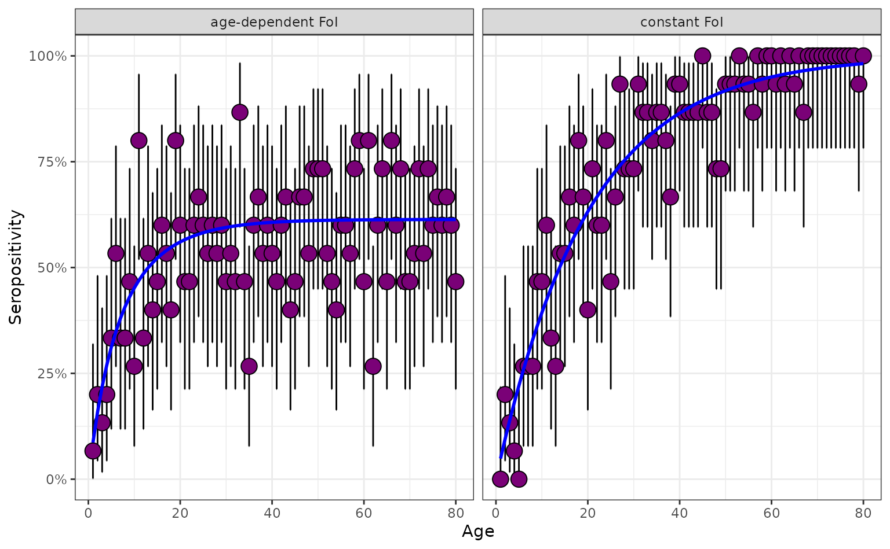
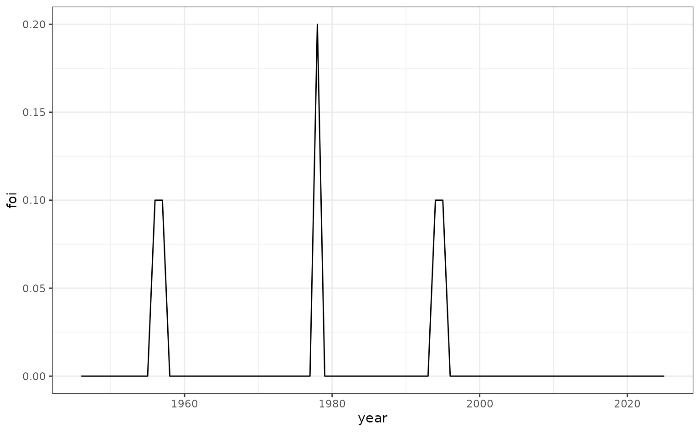
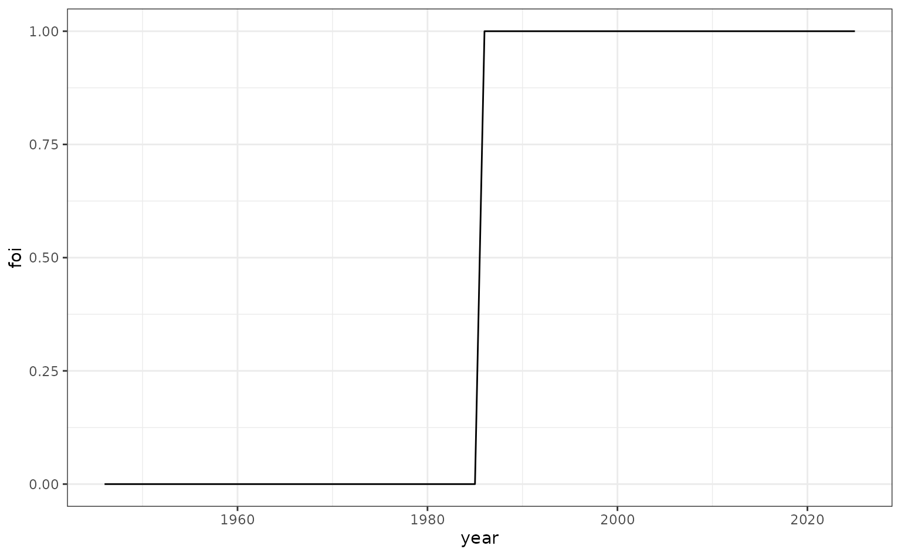
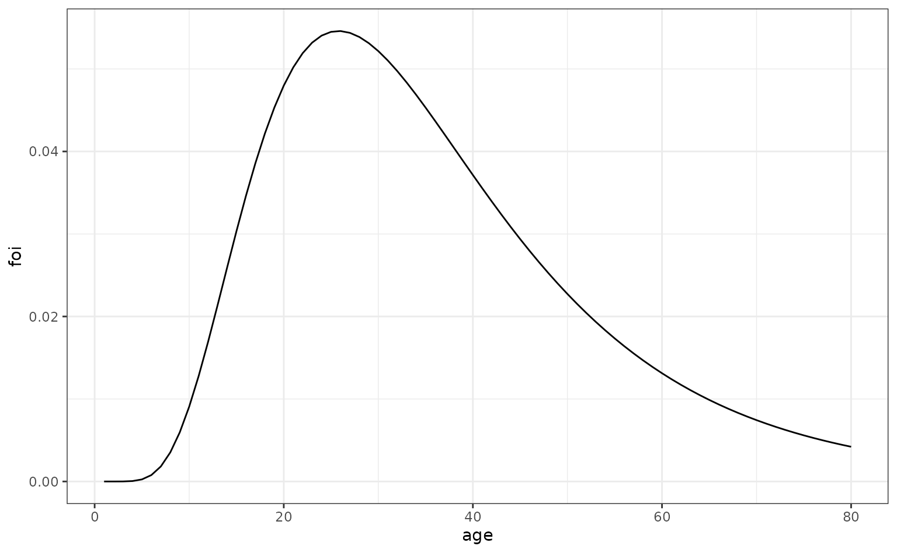
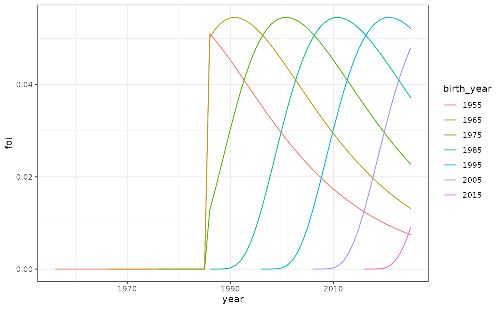
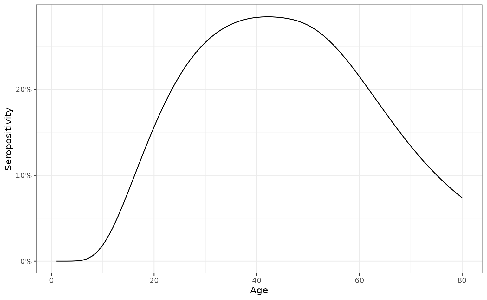
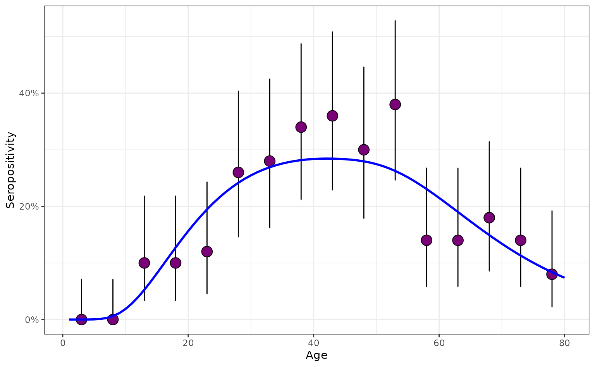

Simulating Serosurveys
Source:vignettes/articles/simulating_serosurveys.Rmd
simulating_serosurveys.RmdIn this vignette, we show how it is possible to simulate serosurveys
using the simulate_serosurvey function. This function
separates two aspects: the serocatalytic model used to simulate
population-wide seropositivity throughout individuals’ lives; and the
features of the particular serological survey that are being used to
uncover these dynamics.
Constant FoI
We start by assuming that a disease has a constant Force-of-Infection (FoI) over time.
max_age <- 80
foi_constant <- data.frame(
age = seq(1, max_age, 1),
foi = rep(0.05, max_age)
)
ggplot(foi_constant, aes(x = age, y = foi)) +
geom_line()
We suppose that we carry out a serological survey which randomly samples the population. For simplicity, to start, we imagine that all individual one-year group ages are sampled and the sample size in each age is the same: .
n_sample <- 15
survey_features <- data.frame(
age_min = seq(1, max_age, 1),
age_max = seq(1, max_age, 1),
n_sample = rep(n_sample, max_age))We then put these pieces together and simulate a serosurvey. Either a time-varying FoI model or an age-varying FoI model would produce the same results here since they are equivalent when the FoI is constant.
serosurvey_constant <- simulate_serosurvey(
model = "age",
foi = foi_constant,
survey_features = survey_features
) |>
mutate(model_type = "constant FoI")
glimpse(serosurvey_constant)
#> Rows: 80
#> Columns: 5
#> $ age_min <dbl> 1, 2, 3, 4, 5, 6, 7, 8, 9, 10, 11, 12, 13, 14, 15, 16, …
#> $ age_max <dbl> 1, 2, 3, 4, 5, 6, 7, 8, 9, 10, 11, 12, 13, 14, 15, 16, …
#> $ n_sample <dbl> 15, 15, 15, 15, 15, 15, 15, 15, 15, 15, 15, 15, 15, 15,…
#> $ n_seropositive <int> 0, 3, 2, 1, 0, 4, 4, 4, 7, 7, 9, 5, 4, 8, 8, 10, 9, 12,…
#> $ model_type <chr> "constant FoI", "constant FoI", "constant FoI", "consta…Now, we can plot the proportions of those seropositive, including the posterior 95% percentiles (when assuming a flat prior), and plot it along the true seropositivities (line blue):
plot_serosurvey(serosurvey_constant) +
geom_line(
data = prob_seroprev_by_age(
model = "age",
foi = foi_constant,
seroreversion_rate = 0
),
aes(x = age, y = seropositivity),
color = "blue",
linewidth = 1
) +
scale_y_continuous(labels = scales::percent)
Age-varying FoI
We now consider a pathogen which has an FoI that varies throughout the age of individuals. We assume the FoI declines strongly throughout childhood.
ages <- seq(1, max_age, 1)
foi_age_varying <- data.frame(
age = ages,
foi = 0.1 * exp(-0.1 * ages)
)
ggplot(foi_age_varying, aes(x = age, y = foi)) +
geom_line()
We use the same survey design as before and simulate a serological survey.
serosurvey_age_dep <- simulate_serosurvey(
model = "age",
foi = foi_age_varying,
survey_features = survey_features
) |>
mutate(model_type = "age-dependent FoI")Below, we see that the FoI for the age-dependent FoI pathogen increases rapidly during the earliest years then plateaus in later adulthood as the FoI effectively becomes negligible.
# combine with constant FoI survey
prob_seroprev_constant <- prob_seroprev_by_age(
model = "age",
foi = foi_constant,
seroreversion_rate = 0
) |>
rename(age_min = age)
prob_seroprev_age <- prob_seroprev_by_age(
model = "age",
foi = foi_age_varying,
seroreversion_rate = 0
) |>
rename(age_min = age)
serosurvey_combined <- rbind(
left_join(
serosurvey_constant,
prob_seroprev_constant,
by = "age_min"
),
left_join(
serosurvey_age_dep,
prob_seroprev_age,
by = "age_min"
)
) |>
mutate(model_type = as.factor(model_type))
plot_serosurvey(serosurvey = serosurvey_combined) +
geom_line(
data = serosurvey_combined,
aes(x = age_min, y = seropositivity),
color = "blue",
linewidth = 1
) +
scale_y_continuous(labels = scales::percent) +
ylab("Seropositivity") +
xlab("Age") +
facet_wrap(~model_type)
Time-dependent FoI
We now consider a pathogen where the FoI varies only over calendar time. We imagine a pathogen that has a ‘spiky’ FoI, characteristic of an epidemic disease.
foi_spiky <- data.frame(
year = seq(1946, 2025, 1),
foi = c(
rep(0, 10),
rep(0.1, 2),
rep(0, 20),
rep(0.2, 1),
rep(0, 15),
rep(0.1, 2),
rep(0, 30)
)
)
# plot
ggplot(foi_spiky, aes(x = year, y = foi)) +
geom_line()
The same serological survey design then produces a serological profile with distinct patterning.
serosurvey_spiky <- simulate_serosurvey(
model = "time",
foi = foi_spiky,
survey_features = survey_features
)Again, we can plot the true seropositivities, which highlights the jumps in seropositivity corresponding to cohorts born either side of epidemics:
# plot shows jumps in seropositivity
plot_serosurvey(serosurvey_spiky) +
geom_line(
data = prob_seroprev_by_age(
model = "time",
foi = foi_spiky,
seroreversion_rate = 0
),
aes(x = age, y = seropositivity),
color = "blue",
linewidth = 1
) +
scale_y_continuous(labels = scales::percent) +
ylab("Seropositivity") +
xlab("Age")
Age-and-time-dependent FoI
Many pathogens may have a transmission strength that varies according to both age and time. An example of this could be for a sexually transmitted disease where transmission follows a characteristic age-specific pattern, peaking in the early 20s. Here, we imagine such a disease which has relatively recently invaded a population.
We imagine the time-specific multiplier of FoI follows the below variation.
foi_time <- c(rep(0, 40), rep(1, 40))
foi_df_time <- data.frame(
year = seq(1946, 2025, 1),
foi = foi_time
)
# plot
ggplot(foi_df_time, aes(x = year, y = foi)) +
geom_line()
We create a pattern of age-structured FoI multipliers which peaks in those of early 20s.
ages <- seq(1, 80, 1)
foi_age <- 2 * dlnorm(
ages, meanlog = 3.5, sdlog = 0.5)
foi_df_age <- data.frame(
age = ages,
foi = foi_age
)
# plot
ggplot(foi_df_age, aes(x = age, y = foi)) +
geom_line()
To create the overall FoI (which is a function of both time and age), we create the product of the time- and age-dependent parts of it.
foi_age_time <- expand.grid(
year = foi_df_time$year,
age = foi_df_age$age
) |>
left_join(foi_df_age, by = "age") |>
rename(foi_age = foi) |>
left_join(foi_df_time, by = "year") |>
rename(foi_time = foi) |>
mutate(foi = foi_age * foi_time) |>
select(-c("foi_age", "foi_time"))
We now simulate a serosurvey assuming these historical FoIs generated the population-wide seropositivities in 2025; we make the sample sizes larger to be able to clearly visualise the patterns in seropositivity. We also illustrate how serosurveys with wider age-bins can be generated by choosing 5-year bins.
max_age <- 80
n_sample <- 50
survey_features <- data.frame(
age_min = seq(1, max_age, 5),
age_max = seq(5, max_age, 5)) |>
mutate(n_sample = rep(n_sample, length(age_min)))
serosurvey <- simulate_serosurvey(
model = "age-time",
foi = foi_age_time,
survey_features = survey_features
) |>
mutate(model_type = "non-seroreverting")
plot_serosurvey(serosurvey) +
geom_line(
data = prob_seroprev_by_age(
model = "age-time",
foi = foi_age_time,
seroreversion_rate = 0
),
aes(x = age, y = seropositivity),
color = "blue",
linewidth = 1
) +
scale_y_continuous(labels = scales::percent) +
ylab("Seropositivity") +
xlab("Age")
We compare this with a closely related pathogen which exhibits seroreversion – a process by which individuals lose their antibody detectability over time. Owing to its seroreversion, this pathogen produces a seropositivity profile that peaks at a slightly lower level than previously.
# generate serosurvey for a seroreverting pathogen
serosurvey_serorevert <- simulate_serosurvey(
model = "age-time",
foi = foi_age_time,
survey_features = survey_features,
seroreversion_rate = 0.01
) |>
mutate(model_type = "seroreverting")
# combine with constant FoI survey
prob_seroprev_no_serorev <- prob_seroprev_by_age(
model = "age-time",
foi = foi_age_time,
seroreversion_rate = 0
) |>
rename(age_min = age)
prob_seroprev_serorev <- prob_seroprev_by_age(
model = "age-time",
foi = foi_age_time,
seroreversion_rate = 0.01
) |>
rename(age_min = age)
serosurvey_combined <- rbind(
left_join(
serosurvey,
prob_seroprev_no_serorev,
by = "age_min"
),
left_join(
serosurvey_serorevert,
prob_seroprev_serorev,
by = "age_min"
)
) |>
mutate(model_type = as.factor(model_type))
# plot both
plot_serosurvey(serosurvey = serosurvey_combined) +
geom_line(
data = serosurvey_combined,
aes(x = age_min, y = seropositivity),
color = "blue",
linewidth = 1
) +
scale_y_continuous(labels = scales::percent) +
ylab("Seropositivity") +
xlab("Age") +
facet_wrap(~model_type)
Simulating from a general serological model
We now illustrate an example age- and time-dependent FoI model for representing the prevalence of HIV (in the absence of treatment). In the absence of treatment, HIV invariably ends in death, and death usually occurs after the onset of AIDS which occurs typically many years after infection. This means that the time from infection to death has a characteristic waiting time, which year we model as being around 10 years long.
Our model considers a single susceptible group, indexed by their birth year, , and calendar time, . There are then a series of consecutive seropositive states, , for ; then finally a dead state, . By distributing the seropositive population across a range of states, this model effectively institutes a delay from infection until death. Our model takes the following form:
where and all other compartments have initial conditions set to zero. We assume that and are piecewise-constant with one-year pieces, with their values the same as those from the sexually transmitted disease example above.
This model does not fit neatly into our other classes of serocatalytic models, and, more generally, we cannot produce specific methods for any foreseeable model structure. But it is possible to find a general strategy for solving such models by rewriting them as piecewise-linear systems of ordinary differential equations.
Since the system is linear, we can write it as a vector differential equation by defining as a vector of states and as a matrix of constants that are fixed for a given year and year of birth:
Using this matrix, we can write and solve the system of equations:
where we have used matrix exponentials to find the solution because the individual algebraic expressions are unwieldy with this many compartments. This matrix form means that a general solution for the system can be written down as follows:
We now illustrate how such a system can be solved and used to
simulate a serosurvey using serofoi. The key to this is
writing a method for constructing the matrix
in the above expression.
# use same age- and time-specific multipliers
u <- foi_df_age$foi
v <- foi_df_time$foi
# function to construct A matrix for one piece
construct_A <- function(t, tau, u, v) {
u_bar <- u[t - tau]
v_bar <- v[t]
A <- diag(-1, ncol = 12, nrow = 12)
A[row(A) == (col(A) + 1)] <- 1
A[1, 1] <- -u_bar * v_bar
A[2, 1] <- u_bar * v_bar
A[12, 12] <- 0
A
}
# determines the sum of seropositive compartments of those still alive
calculate_seropositivity_fn <- function(Y) {
sum(Y[2:11]) / (1 - Y[12])
}
# initial conditions in 12D state vector
initial_conditions <- rep(0, 12)
initial_conditions[1] <- 1
# solve
seropositive_hiv <- prob_seroprev_gen_by_age(
construct_A,
calculate_seropositivity_fn,
initial_conditions,
max_age = 80,
u,
v
)
ggplot(seropositive_hiv, aes(x = age, y = seropositivity)) +
geom_line() +
scale_y_continuous(labels = scales::percent) +
ylab("Seropositivity") +
xlab("Age")
We can also simulate a serosurvey assuming the above model.
serosurvey <- simulate_serosurvey_general(
construct_A,
calculate_seropositivity_fn,
initial_conditions,
survey_features,
u,
v
)
# plot
plot_serosurvey(serosurvey) +
geom_line(
data = seropositive_hiv,
aes(x = age, y = seropositivity),
color = "blue",
linewidth = 1
) +
scale_y_continuous(labels = scales::percent) +
ylab("Seropositivity") +
xlab("Age")